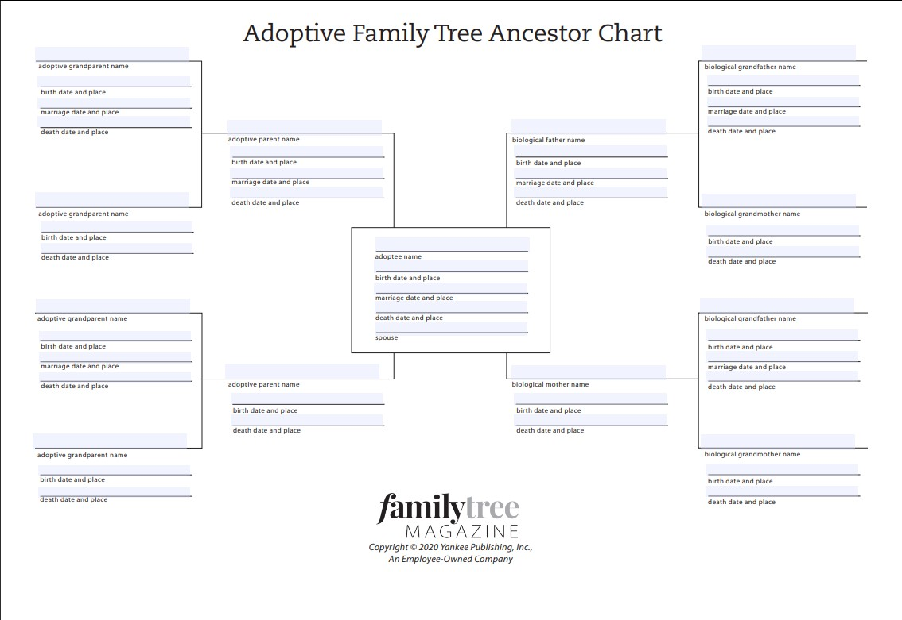

Charts
Adoptive Family Tree
This is a form that is used for recording both biological and adoptive parents
Ahnentafel Chart
An example of what one would look like is:
1. You
2. Father
3. Mother
4. Paternal Grandfather
5. Paternal Grandmother
6. Maternal Grandfather
7. Maternal Grandmother
Male: # * 2
Female: # * 2 + 1
A genealogical numbering system which traces the ancestry of a individual back in time. (This is availible with you personal software program)